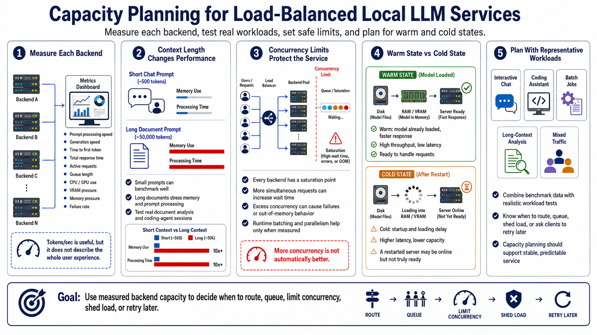

Performance and Capacity Planning
Connecting to LMS... Progress: in progress

Narration
Capacity planning should begin with measurements from each backend. Useful signals include prompt processing speed, generation speed, time to first token, total response time, active requests, queue length, CPU use, GPU use, VRAM pressure, memory pressure, and failure rate. Tokens per second is useful, but it does not describe the whole user experience.
Context length changes performance. A long document prompt can consume far more memory and processing time than a short chat message. A service may benchmark well with small prompts and then struggle with real document analysis or coding-agent sessions. Testing should include the actual types of work the load-balanced endpoint is expected to serve.
Concurrency limits protect the service from slow collapse. Every backend reaches a point where adding more simultaneous requests makes everyone wait longer or causes failures. Runtime batching and parallelism can help in some environments, but they need measurement. More concurrency is not automatically better if it increases time to first token or causes out-of-memory behavior.
Warm and cold states matter. A model already loaded in memory can respond much faster than one being read from disk. A freshly restarted server may be online but not ready. Capacity planning should combine benchmark data with representative workloads: chat, coding assistants, batch jobs, long contexts, and mixed traffic. The goal is to know when to route, queue, shed load, or ask clients to retry later.